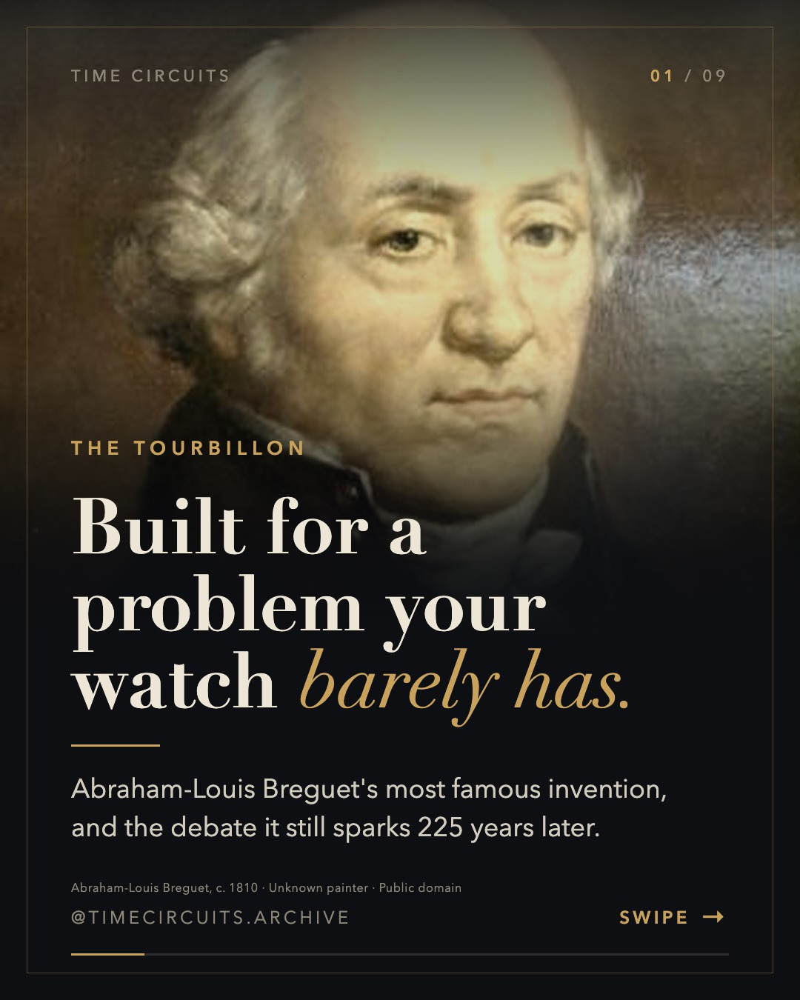
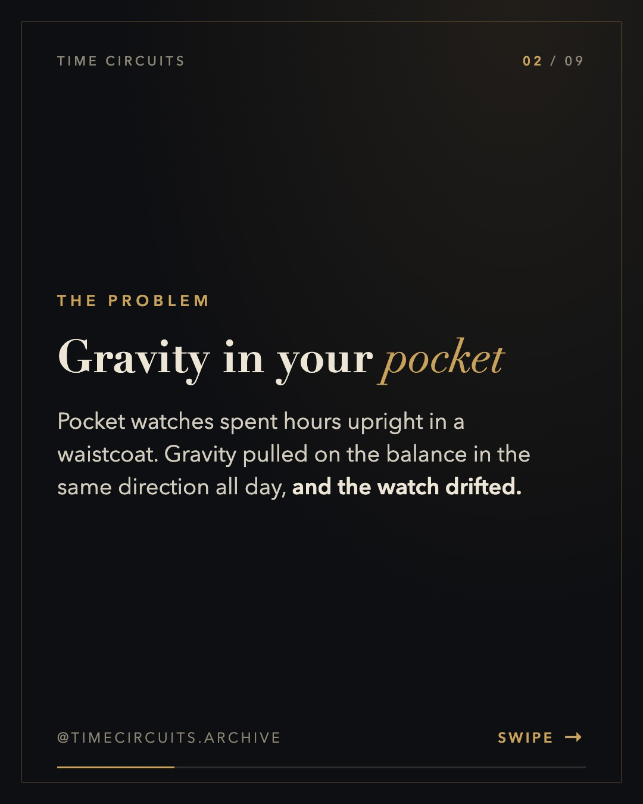
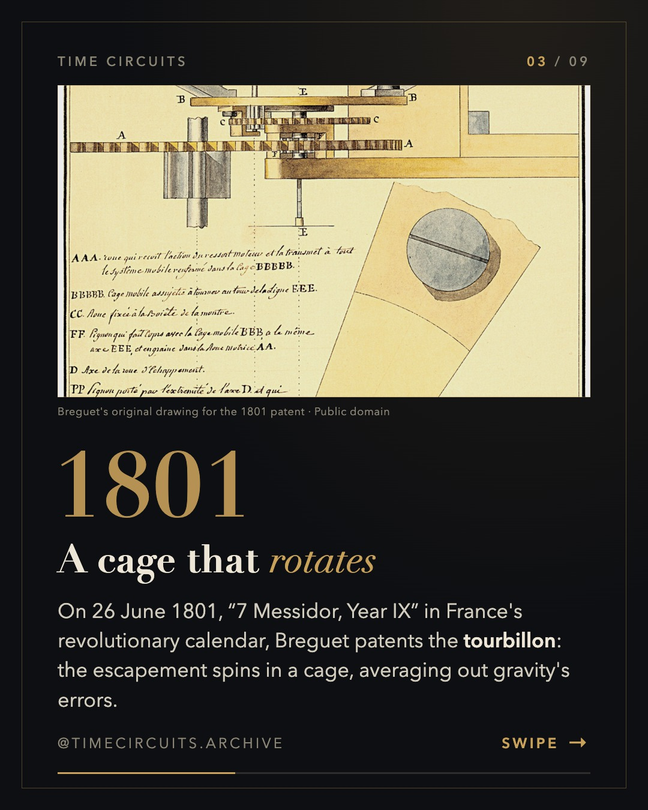
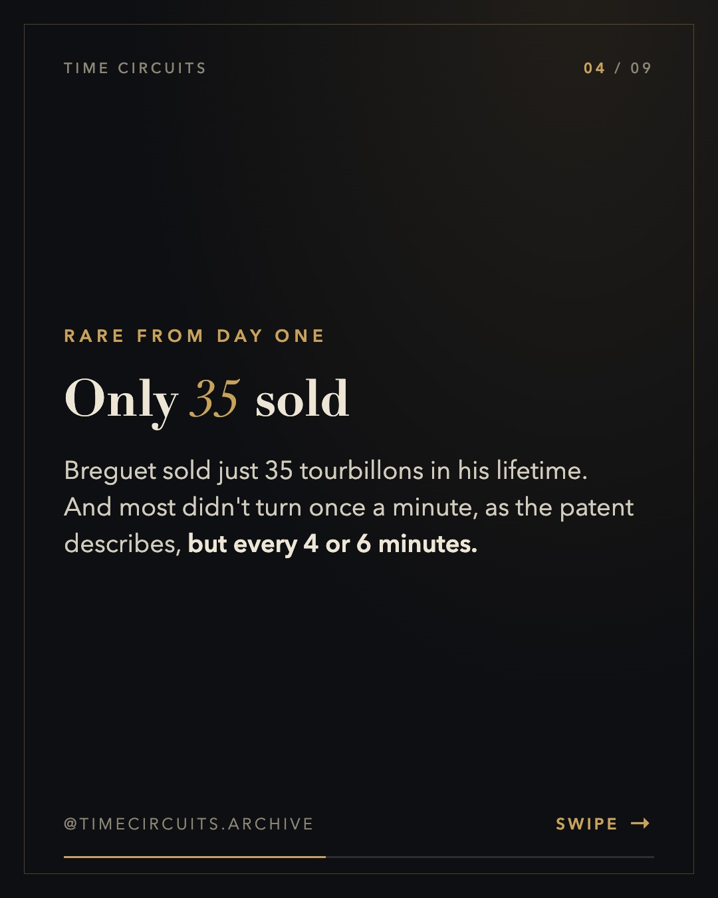
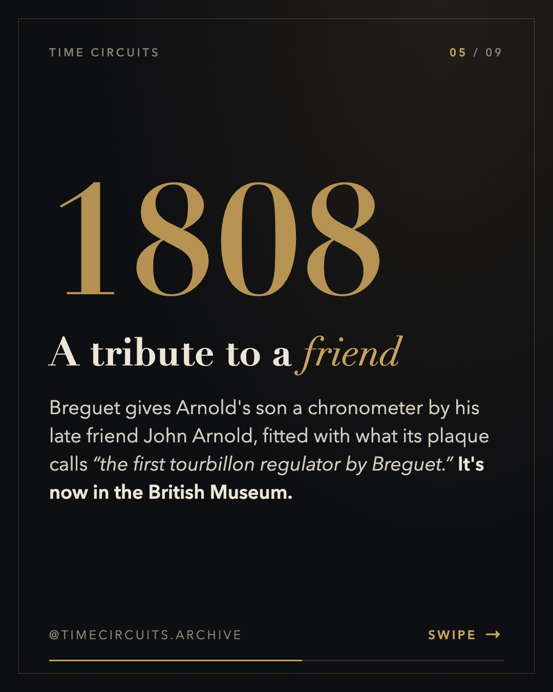
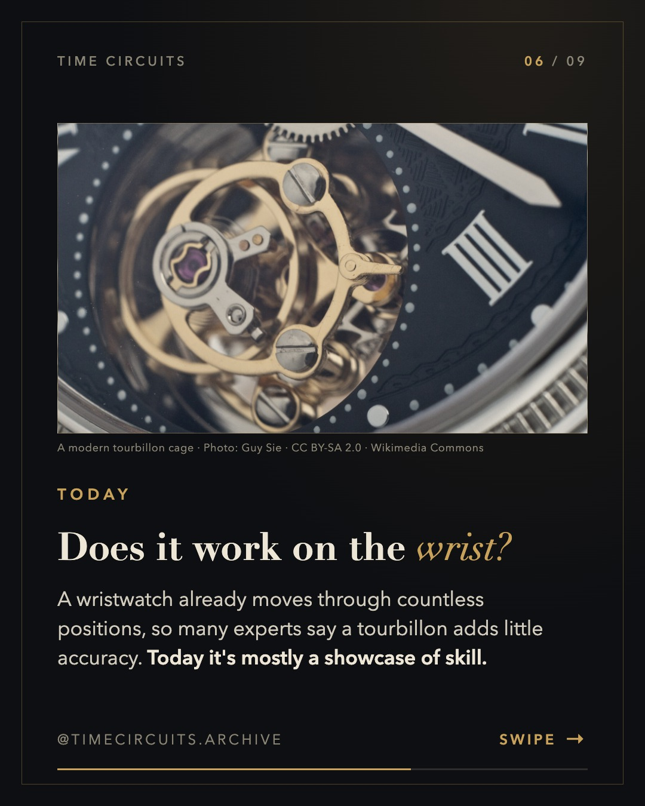
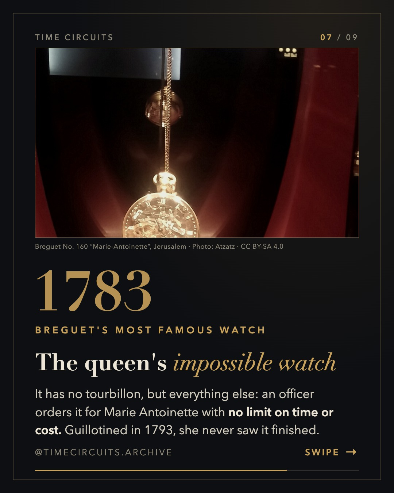
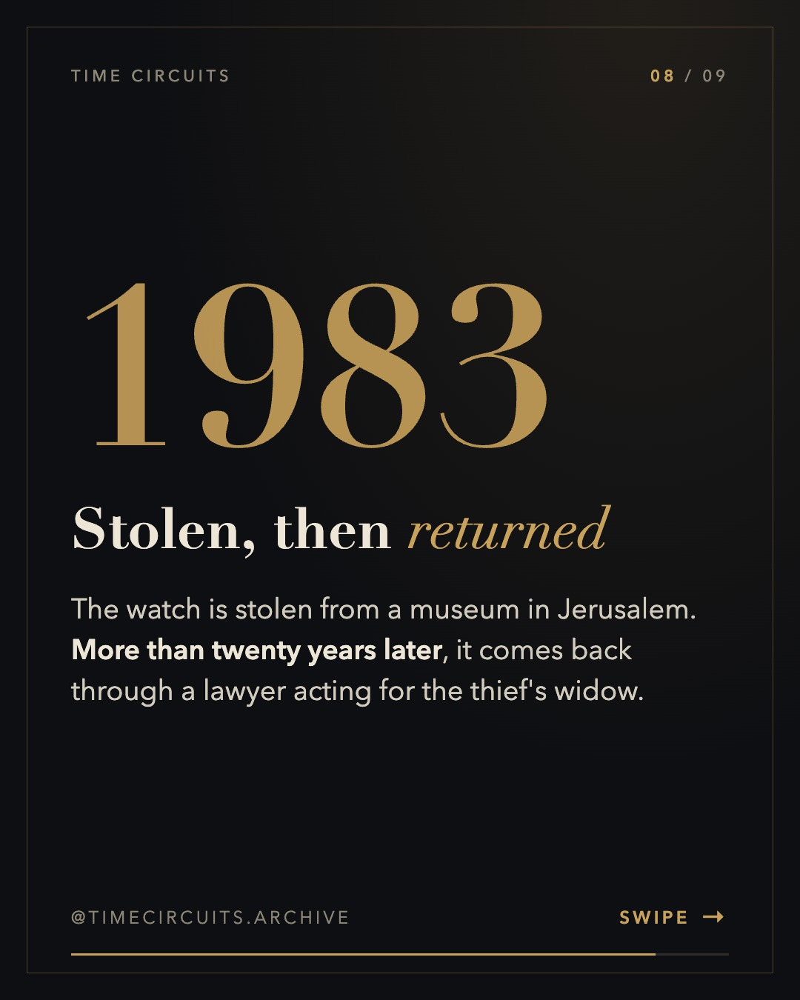
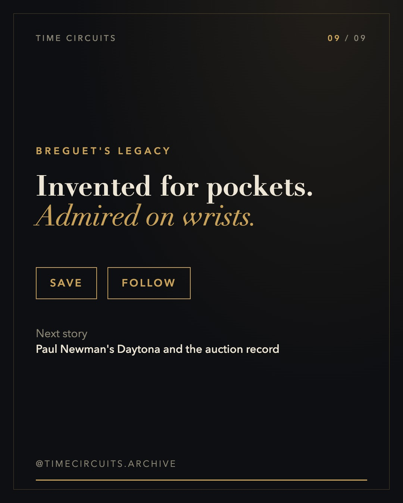

Breguet and the invention of the tourbillon









Caption
In 1801, Breguet invented a spinning cage to fight gravity. 225 years later, it's still watchmaking's ultimate flex. 🌀 The tourbillon was designed for pocket watches stuck upright in a waistcoat. Breguet sold only 35 in his lifetime, and experts still debate whether it helps a wristwatch at all. Would you buy a tourbillon? 👇 Sources: Breguet archive; Swatch Group archive; Revolution; British Museum; Quill & Pad; Wikipedia. #breguet #tourbillon #watchhistory #horology #hautehorlogerie #marieantoinette #pocketwatch #watchmaking #watchesofinstagram
Sources
- Breguet — tourbillon patent, 26 June 1801 / 7 Messidor an IX; 35 sold 1805–1823: https://www.breguet.com/en/breguet-house/1801-1823/patent-granted-completely-new-type-regulator-called-tourbillon
- Revolution — Year of the Tourbillon (patent date, rotation 4–6 minutes): https://revolutionwatch.com/year-of-the-tourbillon/
- Swatch Group archive — Breguet, inventor of the tourbillon: https://www.swatchgroup.com/en/services/archive/2021/breguet-inventor-tourbillon
- British Museum — Arnold No. 11 with Breguet tourbillon, 1808: https://www.bmimages.com/preview.asp?image=00035120001
- Breguet — order of No. 160 (1783, no limit): https://www.breguet.com/en/breguet-house/1775-1801/order-watch-ndeg160-known-marie-antoinette-watch
- Quill & Pad — Marie Antoinette and No. 160: https://quillandpad.com/2019/03/10/the-intriguing-story-of-marie-antoinette-and-her-legendary-breguet-pocket-watch-no-160/
- Naaman Diller (1983 theft, return via his widow's lawyer): https://en.wikipedia.org/wiki/Naaman_Diller
- Quill & Pad — tourbillons, pros and cons: https://quillandpad.com/2025/03/22/tourbillons-pros-and-cons-2/
- Tourbillon (accuracy debate): https://en.wikipedia.org/wiki/Tourbillon
Notes for approval
- Independent fact-check (fact-checker subagent): PASS WITH FIXES → required fix applied (1808 = year of the gift; 'first tourbillon regulator' quoted from the plaque), slides reordered, cover softened.
- No. 160 completion (1802 vs 1827) and recovery year (2006 vs 2007) are disputed, so the slides use wording true either way.
- Fersen, Marat and 'first wristwatch' left out (legends/disputed).
- Accuracy on the wrist is presented as a debate ('many experts say').